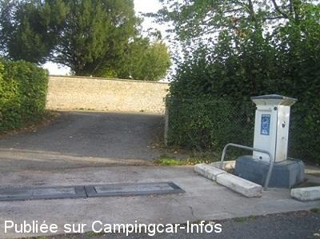
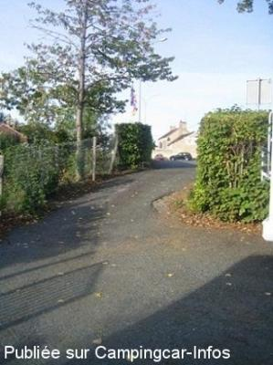
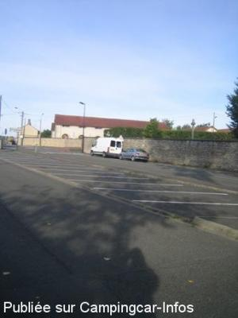

AS = Aire de services uniquement de :
ALENÇON
(N° 365)
Accès/adresse :
Rue de Guéramé
61000 ALENÇON
61000 ALENÇON
Latitude : (Nord) 48.42622° Décimaux ou 48° 25′ 34′′
Longitude : (Est) 0.07351° Décimaux ou 0° 4′ 24′′
Tarif : 2016
Services : 2,20 €
Type de borne : EURO-RELAIS
Services :


Autres informations :

Le 17/09/2010 par Jack

Le 17/09/2010 par Jack

Le 17/09/2010 par Jack
de
DPFR 64
le 30/04/2014 :
le 27/04/2014 Aire petite 5 CC maximum en pente mais calme
le 27/04/2014 Aire petite 5 CC maximum en pente mais calme
de
oso
le 04/11/2012 :
je confirme pour les grands CC les manoeuvres peuvent être difficile surtout si un CC est stationné le long de la haie.Le parking du cimetière est interdit aux CC signalé par un panneau.
je confirme pour les grands CC les manoeuvres peuvent être difficile surtout si un CC est stationné le long de la haie.Le parking du cimetière est interdit aux CC signalé par un panneau.
de
ocral jack
le 17/09/2010 :
Borne Euro Relais, avec un seul robinet à vis et à poussoir. Aire très petite pour deux à trois camping-cars maxi, en pente. Pour les CCars de plus de 6.50 m je vous déconseille d'y stationner. Il y a, plus haut, un parking qui est au-dessus d'un camping.
Borne Euro Relais, avec un seul robinet à vis et à poussoir. Aire très petite pour deux à trois camping-cars maxi, en pente. Pour les CCars de plus de 6.50 m je vous déconseille d'y stationner. Il y a, plus haut, un parking qui est au-dessus d'un camping.
de
ajil
le 12/04/2010 :
C'est une aire de services et non de stationnement, elle est gratuite, merci Alençon! Pour la journée, on peut stationner le long de la rue, derrière le cimetière et on est à 10 mn du musée de la Dentelle qui vaut vraiment le détour avec un centre ville fleuri de camélias magnifiques.
C'est une aire de services et non de stationnement, elle est gratuite, merci Alençon! Pour la journée, on peut stationner le long de la rue, derrière le cimetière et on est à 10 mn du musée de la Dentelle qui vaut vraiment le détour avec un centre ville fleuri de camélias magnifiques.
de
Laurent
le 08/06/2009 :
Lamentable, honteux. Je n'ai pas d'autres mots pour qualifier cette aire. Je ne suis resté que quelques minutes. Pour qui prend on les camping-caristes ? Que des aires de ce genre et je revend mon camping-car. Pourtant Alençon est une belle ville qui mériterait que l'on si attarde.
Lamentable, honteux. Je n'ai pas d'autres mots pour qualifier cette aire. Je ne suis resté que quelques minutes. Pour qui prend on les camping-caristes ? Que des aires de ce genre et je revend mon camping-car. Pourtant Alençon est une belle ville qui mériterait que l'on si attarde.
de
le 16/10/2007 :
Bonjour. J'utilise environ 3 fois par mois cette aire de camping-cars, je n'ai jamais vu de borne électrique. De plus, cette aire est très petite, deux camping-cars la remplissent!! Le parking à coté est souvent le refuge si on est autonome.
Bonjour. J'utilise environ 3 fois par mois cette aire de camping-cars, je n'ai jamais vu de borne électrique. De plus, cette aire est très petite, deux camping-cars la remplissent!! Le parking à coté est souvent le refuge si on est autonome.
de
gerard
le 10/04/2007 :
plaats vlak voor plaatselijke camping, langs drukke weg afgeschermd door een haag
schuine in en uitrit, sani zuil defect, en plaats ingenomen door een tweetal caravans en bijhorende trekkers.gebruiken oogluikend,stroom en sani installatie van camping.(methode om iedereen op camping te krijgen?)
plaats vlak voor plaatselijke camping, langs drukke weg afgeschermd door een haag
schuine in en uitrit, sani zuil defect, en plaats ingenomen door een tweetal caravans en bijhorende trekkers.gebruiken oogluikend,stroom en sani installatie van camping.(methode om iedereen op camping te krijgen?)
de
le borgne
le 12/01/2007 :
Cette aire doit être entretenue par le camping qui est fermé du 31/10 au 1/04. Nous l'avons trouvé sans eau . On peut s'y garer à 2 ou 3 CC, et l'on est à 10 mn du centre ville.
Cette aire doit être entretenue par le camping qui est fermé du 31/10 au 1/04. Nous l'avons trouvé sans eau . On peut s'y garer à 2 ou 3 CC, et l'on est à 10 mn du centre ville.